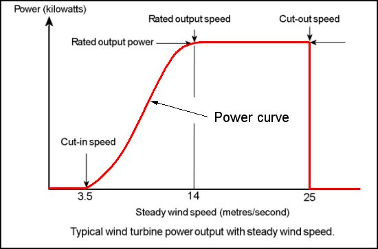
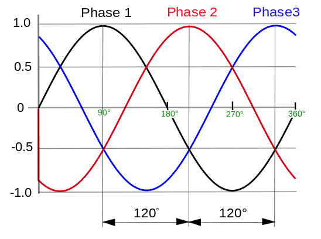

Power curves illustrate the average power output in kW for each model of turbine with varying wind speed. The power output should be proportional to the the wind speed in m/s increasing as the windspeed increases.At higher wind speeds, the design of the turbine is arranged to limit the power to this maximum level and there is no further rise in the output power. How this is done varies from design to design but typically with large turbines, it is done by adjusting the blade angles so as to to keep the power at the constant level.
 Typical power curve.Three-phase Power Supply
The three-phase power supply is where the power plant produces three different phases of AC power simultaneously, and the three phases are 120 degrees from each other. There are four wires coming out of every power plant: the three phases plus a neutral or ground common to all three. At any given moment one of the three phases is nearing a peak making the three-phase power supply extremely effective.
 Graph of a three-phase power supply.